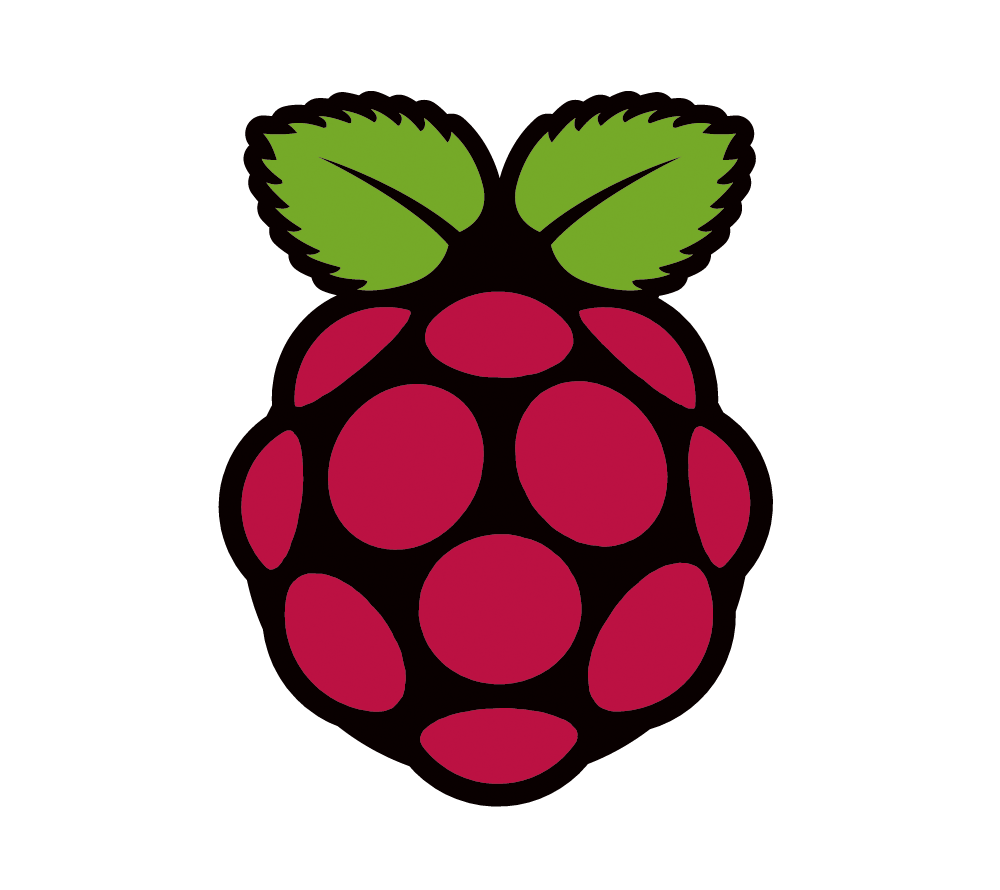

Hackeando Tecnologias Digitais e Não-Digitais
by Paty Morimoto
Muito Prazer!

- Desenvolvedora há mais de... há muito tempo!
- PyLady desde 2016
- Projeto SciELO desde 2018
2016
MariaLab
- Fundada em 2014
- Mulheres em Tecnologias Digitais e Cultura Hacker
Somos uma coletiva hacker feminista interseccional
- Hacker: exploramos conhecimentos políticos, de gênero e tecnológicos.
- Feminista: lutamos coletivamente
- Interseccional: o feminismo não é um movimento único
Nós, feministas
- Questionar o desenvolvimento das tecnologias digitais e não-digitais
- Desenvolver tecnologia feminista
Nós, interseccionais
- Presente dado pelo feminismo negro
- O Feminismo branco da classe média não representa a voz de todas as mulheres
- Gênero, raça, classe, capacidade, orientação sexual, religião, casta, idade e outros
- Opressões: racismo, misoginia, classismo, capacitismo, xenofobia, bifobia, homofobia, transfobia
MariaLab
- Até 2017
- Coletiva Itinerante
- Encontros e Oficinas
- 7 Marias
- Café com MariaLab
- Oficinas na área de tecnologia
- Grupo de Estudos
MariaLab
- 2018
- Nossa Espaça em uma casa coletiva
- 40 atividades em 7 meses
- Encontros
- Oficinas de áreas diversas
- Acolhida de outras coletivas
MariaLab
- 2019
- Nossa Espaça em novo lugar
- Novas possibilidades
Fuxico
Fuxico - Origem
- 2017/2018
- Projeto sobre redes autônomas feministas
- Reflexões observando grupos de mulheres plurais:
- Como espalhar conteúdo feminista e ensinar conceitos de rede?
- Como enviar email e whatsapp sem internet?
Fuxico - Origem
- Protótipo
- Em português
- Bem recebida em vários grupos e eventos
Fuxico?
- Técnica de mais de 150 anos
- Pedaços de tecidos que sobram da costura
- Construção de peças inteiras, desde roupas a colchas
- Diz-se que a origem do nome foi cunhada por um homem para fofocas feitas por mulheres enquanto costuravam juntas.
Fuxico!
Tecnologia feminista desenvolvida
por mulheres
, para mulheres
Atender a problemas da luta feminista
Ressignificar esta arte tão antiga para o verdadeiro fuxico:
Trocas e compartilhamentos de saberes entre as mulheres
Sementeira: espalhando sementes crioulas
- Cultivadas e mantidas pelos povos e comunidades tradicionais ao longo de gerações
- Riqueza natural de nossas terras
- Por meio dos cultivos agroecológicos e das trocas de sementes, elas permanecem vivas
Sementeira na Fuxico: troca livre de arquivos
- Fora da internet! Aqui você pode trocar arquivos e conversar anonimamente
- Cada arquivo é como uma semente criola
- Obtida livremente e "plantada" em um outro lugar
- O conhecimento - assim como as sementes e as mulheres - deve ser livre!
- Liberdade, porém, envolve consentir com o que você expõe e nunca é a liberdade de oprimir a outras.
Por dentro da Fuxico
- Fork do projeto Piratebox (https://piratebox.cc/)
- Projeto de Software Livre
(https://github.com/PirateBox-Dev) - Rede Autônoma sem fio: troca de conteúdos fora da internet
Por dentro da Fuxico
- Linux embarcado
-  Raspberry Pi 3
- Scripts Shell
-
 Lighttpd
Lighttpd
- Backend Python
- Frontend VueJS
-
 HTML e Bootstrap
HTML e Bootstrap
Por dentro da Fuxico
Backend Python
-
 Bottle Web Framework
Bottle Web Framework
- WebTest
- Boddle
Fuxico na WEB
https://fuxico.org
https://gitlab.com/marialab/fuxico
MariaLab
https://marialab.org
https://gitlab.com/marialab
contato@marialab.org
Referências
- http://www.sof.org.br/praticas-feministas-de-transformacao-da-economia-autonomia-das-mulheres-e-agroecologia-no-vale-do-ribeira/
- https://www.brasildefato.com.br/2016/12/21/sementes-crioulas-garantem-a-preservacao-de-especies-e-alimentos-saudaveis/
@'s
- patymori
- patymori
- excermori
- paty_morimoto